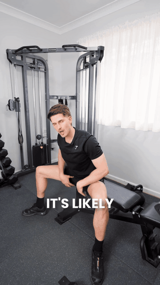
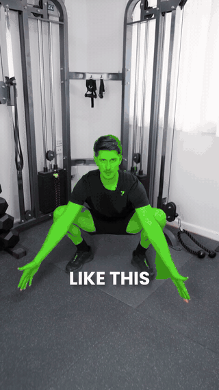
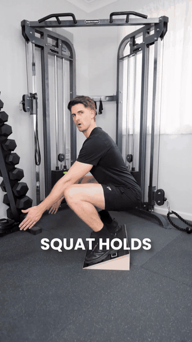
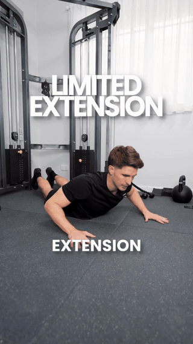
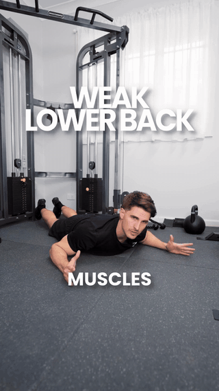

Finds tight hip flexors & groin. Sit tall, hinge forward from the hips keeping the lower back flat. You should reach at least horizontal without the back rounding.

Ankle mobility check. Settle into a full-depth squat with an upright torso. If you round the lower back at the bottom or get stuck high, your ankles are the limiter.

The fix for squat depth. Heels elevated on a slant board shifts the demand to ankle mobility so you can sit deeper with a straight spine. Hold the bottom position.

Extension range check. Prone, hands under shoulders, press the chest up while hips stay down. Can't get much height off the floor = limited lumbar extension.

Lower back strength check. Prone, lift arms and legs off the floor and hold. Fatiguing fast means weak erectors — the muscles that keep you sitting tall.